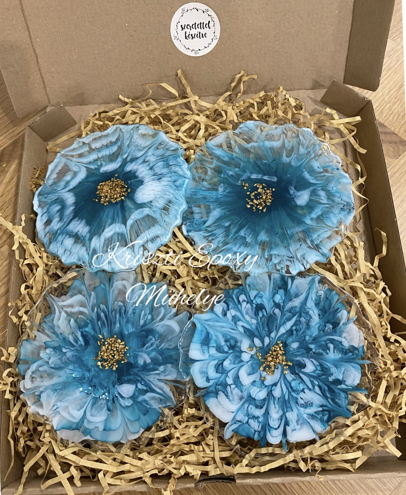
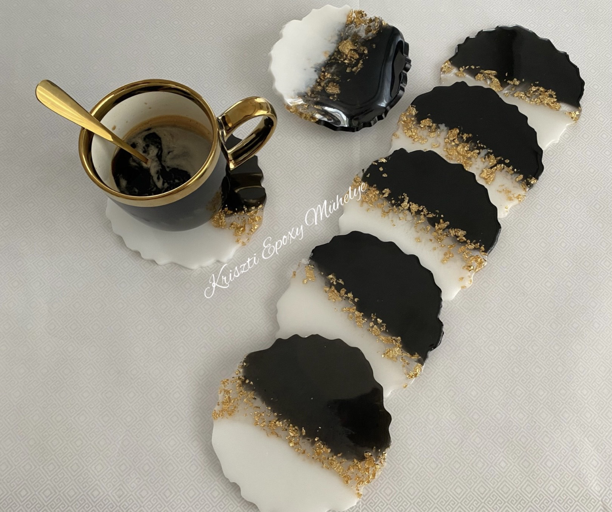

Poháralátét


Az alátétek epoxy gyantából készültek, melyek mindegyike egyedi darab. Ami biztos, hogy igazáng különlegessé fogja varázsolni otthonodat. Fantasztikus ajándék ötlet bármilyen alkalomra.
Kiváló 4:1-ben poháralàtét/ültetőkártya/köszönetajándék/dekorációs szerepet tölhet be Esküvőkön.
Nagyobb megrendelés esetèn kedvezmènyt tudok biztosítani.
Poháralátét átmérője: 13 cm
Mivel a termékek saját kézzel készültek, lehetnek benne apróbb felületi egyenletlenségek, vagy a gyanta öntése során kialakult pici buborékok, amik szerintem csak még egyedibbé teszik a terméket.
Fontos!
A tálcát ne tedd ki közvetlen forróságnak, napsütésnek és extrém hidegnek sem, mert ezek mind misőségromláshoz vezethetnek.
Tisztítás: nedves, mosószeres ruhával
Kiváló 4:1-ben poháralàtét/ültetőkártya/köszönetajándék/dekorációs szerepet tölhet be Esküvőkön.
Nagyobb megrendelés esetèn kedvezmènyt tudok biztosítani.
Poháralátét átmérője: 13 cm
Mivel a termékek saját kézzel készültek, lehetnek benne apróbb felületi egyenletlenségek, vagy a gyanta öntése során kialakult pici buborékok, amik szerintem csak még egyedibbé teszik a terméket.
Fontos!
A tálcát ne tedd ki közvetlen forróságnak, napsütésnek és extrém hidegnek sem, mert ezek mind misőségromláshoz vezethetnek.
Tisztítás: nedves, mosószeres ruhával
Ára: 2000Ft/db
Kosárba teszem